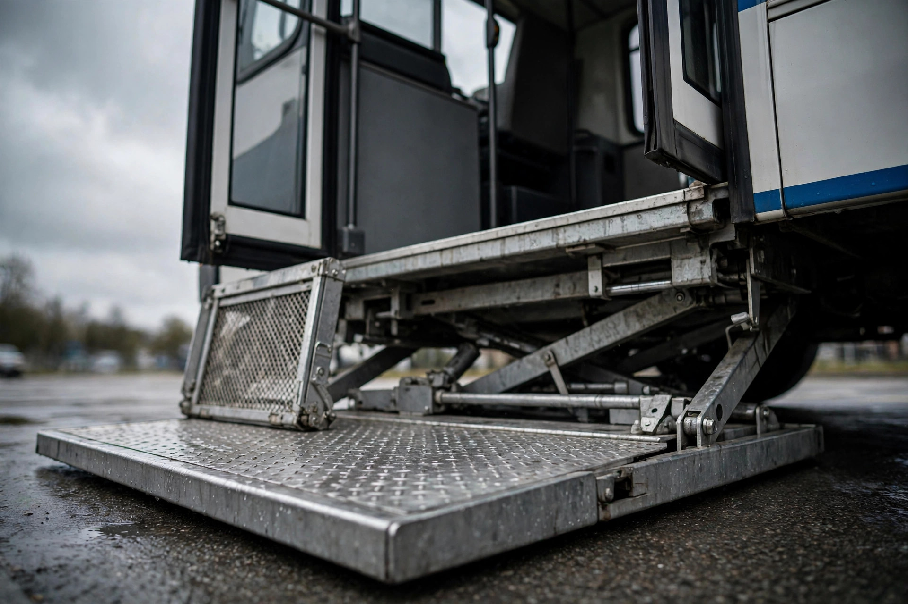

The Lift That Won't Stop Has Already Been Excused Once

This week, NHTSA logged recall 26V565, covering 55 Forest River transit buses that carry Ricon S-Series and K-Series wheelchair platform lifts whose electrical contactor may fail. When it fails, the controls cannot stop the lift.[1] The lift keeps moving while someone is on it. A wheelchair lift that ignores its own stop command is about as close to a contradiction as safety engineering gets.
The fix is two diodes: dealers will correct the wiring free of charge, and owner notification letters go out October 10, 2026.[1] These are transit buses, not connected vehicles; there is no software update to push. Someone has to open the wiring and add the diodes by hand.
That is not a random number. These exact lift families, the Ricon S-Series and K-Series, are already famous in the world of federal vehicle standards for the opposite of this problem. Ricon determined that its S-Series and K-Series lifts do not fully comply with the inner roll stop interlock requirements of FMVSS 403: the rule says the platform must stop unless the inner roll stop has deployed, and the vertical movement during the test must not exceed 13 millimeters, half an inch.[2] Ricon and the bus manufacturers that installed the lifts petitioned NHTSA to declare the noncompliance inconsequential. NHTSA granted the petitions.[2] They were excused from recalling.
Now, on the same lift families, the stop function itself is the defect. The federal rulebook measured stopping within 13 millimeters, found a deviation, and called it harmless. This week's recall is about a lift that may not stop at all.
Some engineering matters here, because a contactor is an electromechanical relay that carries the motor current for the lift. When the operator releases the control or hits stop, the contactor is supposed to open and cut power to the drive. If the contactor fails, typically welded or stuck contacts, the stop command goes out and nothing happens. The motor keeps running, and the platform keeps moving. Diodes in this context are the cheapest possible correction: placed across the coil or in the control path, they manage current flow so the relay releases cleanly instead of welding itself shut. Two diodes, a few dollars in parts, are the difference between a lift that stops when told and one that does not.
None of this is exotic technology, which is what makes the timeline sting. The federal platform lift standards, FMVSS 403 for the lift equipment and 404 for its installation, date to a final rule on December 27, 2002. They were written explicitly to protect "individuals who are aided by canes, walkers, wheelchairs, scooters, and other mobility devices."[3] The standards require interlocks, threshold warning signals, and an operations counter; public-use lifts must carry a 600-pound standard load and survive 15,600 endurance cycles.[3] One more requirement, from Ricon's own service checklist for these very lifts: "Manual backup operation fully functional."[4] The lifts have a manual way to be operated. If the attendant knows where it is, a failed contactor does not have to mean an uncontrollable lift.
Everyone involved has a strong defense, and it deserves a full hearing. Ricon self-reported the roll-stop deviation and self-reported this contactor defect. That is the system working as designed, twice. NHTSA's grant of the inconsequentiality petitions was an engineering judgment by the agency's own staff, not a favor: they looked at the inner roll stop interlock deviation and concluded it did not affect safety. The contactor failure is a different subsystem from the roll stop. Conflating the two would be a category error, and a 55-bus population with no reported injuries and a simple dealer fix is exactly the kind of recall that resolves quietly, and the irony is rhetorical, not mechanical.
Fair enough, but rhetoric matters when the passengers are the least able to help themselves. The people who ride these lifts are paratransit riders and wheelchair users who cannot simply step off a moving platform. The federal standard for these lifts is written in millimeters and cycle counts. When the stop button stops working, none of the millimeters matter.
Here is what to do: if your transit agency or paratransit operator runs 2024 Mobility Trans Safetbus or Glaval Universal buses, or 2025 Senator II or Starcraft Allstar buses, check whether they carry Ricon S-Series or K-Series lifts and run the VINs at nhtsa.gov/recalls; letters post October 10 and the fix is free.[1] If you ride a wheelchair lift, or you assist someone who does, find out where the manual backup operation is before the lift ever moves, because Ricon requires it to be functional and your attendant should be able to point to it without looking it up.
NHTSA once looked at these lifts and ruled that a small failure to stop did not matter; this time the failure is not small, and two diodes will fix it.
Sources & References
- NHTSA Recall 26V565000: Forest River Bus, LLC; 55 transit buses (2024 Mobility Trans Safetbus, 2024 Glaval Universal, 2025 Senator II, 2025 Starcraft Allstar) equipped with Ricon S-Series and K-Series wheelchair platform lifts; electrical contactor may fail preventing the controls from stopping the lift; remedy is a wiring correction installing two diodes, free; owner letters expected October 10, 2026; Forest River number 51-2093. nhtsa.gov/recalls; summary via Consumer Affairs auto-safety recall derby, Sept 8, 2026.
- U.S. Department of Transportation, Grant of Petitions for Decision of Inconsequential Noncompliance, FR 2024-17818: Ricon Corporation determined that certain Mirage, S-Series, and K-Series wheelchair lifts do not fully comply with FMVSS No. 403; various vehicle manufacturers determined noncompliance with FMVSS No. 404; NHTSA granted the petitions. The underlying noncompliance: Classic S-Series and K-Series lifts do not comply with the inner roll stop interlock requirements of FMVSS No. 403, S6.10.2.4 and S6.10.2.7 (platform must stop unless the inner roll stop has deployed; vertical change not to exceed 13 mm / 0.5 in per test S7.6.1). transportation.gov
- NHTSA, FMVSS No. 403/404 Final Rule, Dec 27, 2002: Platform Lift Systems for Motor Vehicles and Platform Lift Installation in Motor Vehicles; standards established "to protect individuals who are aided by canes, walkers, wheelchairs, scooters, and other mobility devices"; public-use lift requirements include 600 lb standard load, 15,600-cycle fatigue endurance, interlocks (S6.10), operations counter (S6.11). nhtsa.gov
- Ricon Corporation, S-Series and K-Series Service Manuals: safety checklist requires "Manual backup operation fully functional (see operator manual for directions)." riconcorp.com (S-Series), riconcorp.com (K-Series)